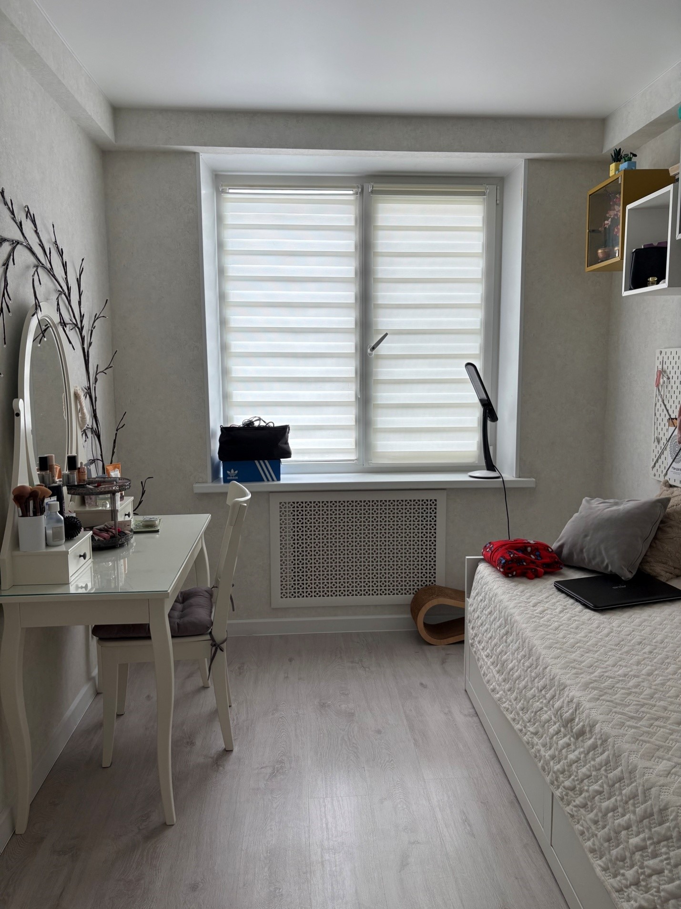
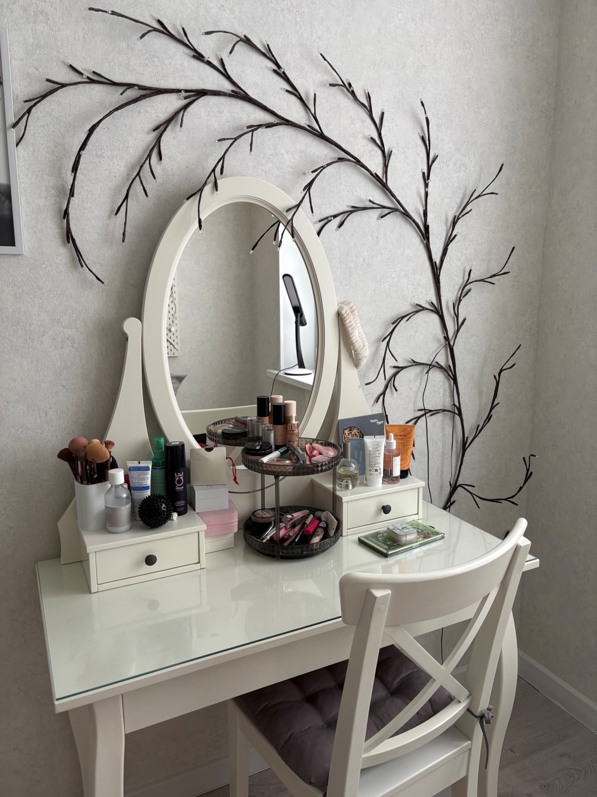
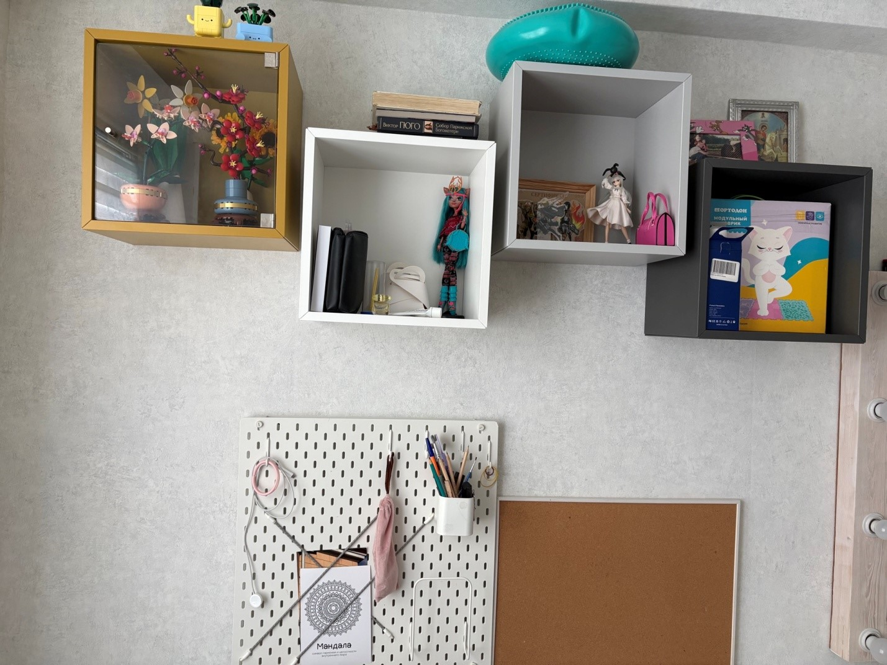
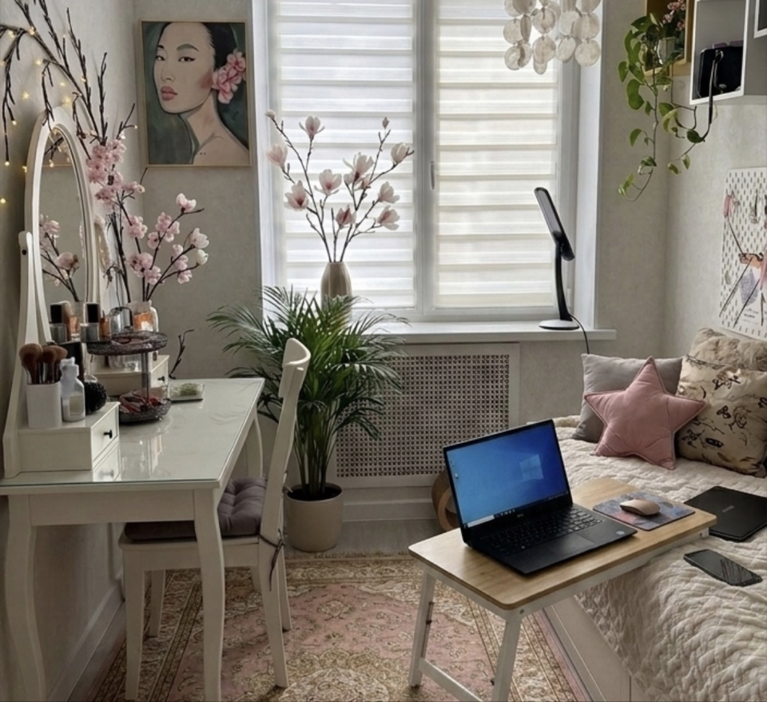
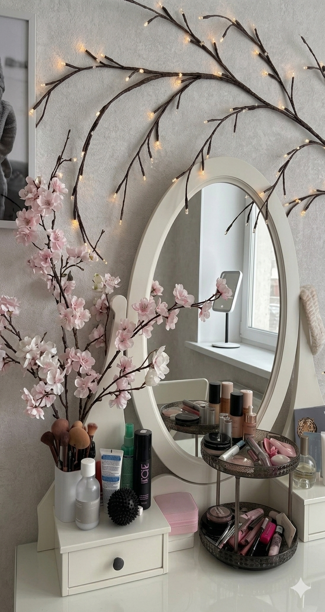
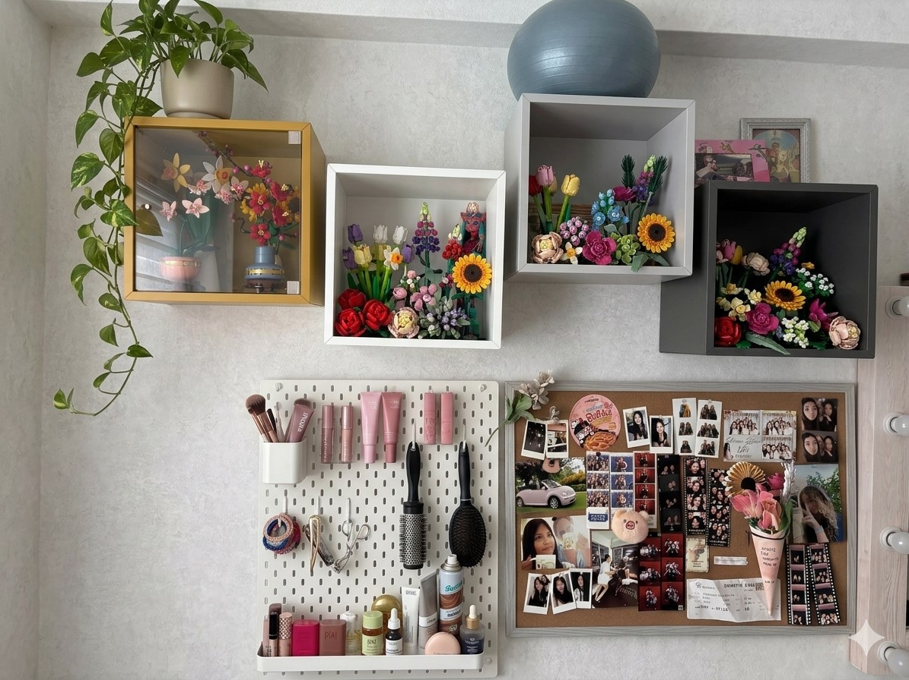

Тёплый свет · Живые растения · Стильный декор на полках
Название проекта: «Алиса 2.0 — Ковёр, люстра, зелень на столе и украшения на полках»
Локация: Комната Алисы (≈ 16 м², спальня + творческая зона)
Целевая аудитория: Я, Алиса (дизайнер интерьеров в душе, люблю атмосферу, книги, эстетику и живой стиль)
Главные боли: 🧸 неуютно — нет ковра, не хватает люстры (одна холодная лампа); 🌱 нет цветов на столе — скучно, не хватает жизни; 🖼️ полки пустые, нет украшений и персонализации — комната выглядит безликой.
Уникальность: Бюджетное, но трансформирующее обновление: добавляем тактильный уют (ковёр, люстру), зелёные акценты (комнатные растения на столе) и декорируем полки — книгами, свечами, винтажными безделушками. Комната становится отражением моей души.
Измеримая цель: купить пушистый ковёр 160×230 см, заменить потолочную люстру на многорежимный светильник, разместить 3+ растения на столе и подоконнике, украсить полки минимум 10 предметами декора → повысить уровень комфорта и эстетики на 150%.
Честный визуальный аудит: три основные проблемы, которые мешают наслаждаться комнатой и чувствовать тепло дома.



Что изменится после преображения: вечерами заваривать чай, сидеть на ковре с подушками, слушать музыку при свете тёплой люстры. Работать за столом, где рядом стоят живые цветы, вдыхать их свежесть. Полка станет моим маленьким музеем — книги, коллекция свечей, фотографии путешествий.
Критические требования: ковёр должен быть мягким и приятным для босых ног. Люстра — с возможностью регулировки яркости или тёплый свет. Растения — безопасные для аллергии и простые в уходе. Для полки: минимум 5 личных предметов, которые рассказывают обо мне.
Бюджетные этапы: 1) ковёр + люстра (базовое преображение), 2) растения и кашпо, 3) декор для полки (часть можно сделать своими руками).
| Категория / товар | Характеристики / стиль | Кол-во | Цена (₽) | Какой минус решает |
|---|---|---|---|---|
| 🧶 Пушистый ковёр | 160×230 см, бежевый/оливковый, высокий ворс (гипоаллергенный) | 1 | 6 990 | ❌ неуютно → мягкое покрытие, тепло, завершённость интерьера |
| 💡 Современная люстра | 5 плафонов, тёплый свет 2700K, регулировка / диммер | 1 | 4 290 | ❌ плохое освещение → мягкий рассеянный свет, уют вечерами |
| 🌿 Комнатные растения на стол | Сансевиерия + хлорофитум + суккулент в керамике | 3 | 2 250 | ❌ нет цветов → зелёная терапия, свежесть, оживление стола |
| 🏺 Кашпо и подставки | Базовые белые/терракотовые, с поддоном | 3 | 1 200 | Органичное сочетание с цветами, эстетика |
| 🖼️ Декор для полки (набор) | Стеклянная свеча, рамка для фото, мини-ваза, стопка книг, фигурка | 1 набор | 2 790 | ❌ пустые полки → персональная история, уютный визуал |
| 📚 Дополнительные книги/журналы | Артбук, винтажная серия, блокноты | 3 шт | 1 500 | Наполнение полки смыслом и цветом |
| 🕯️ Аромадиффузор / свечи | Древесные ноты, ваниль | 2 | 1 100 | Аромат и магия, дополнение к визуалу |
| 🧺 Корзина для пледов | Ротанг / текстиль | 1 | 1 350 | Организация и дополнительный уют |
✅ Ковёр визуально объединяет мебель, дарит мягкость шагам. Люстра с тёплым светом создаёт интимную атмосферу. Рекомендуется добавить один торшер в угол для дополнительных слоёв света.
Располагаем растения слева от рабочей зоны (чтобы не задевать локтем), выбираем неприхотливые виды. Добавляем маленькую лейку для декора. Цветы на столе повышают продуктивность и настроение по исследованиям.
Правило: группируем предметы по 3, чередуем вертикаль и горизонталь. Книги ставим горизонтально и вертикально, добавляем рамку с фото, свечу и маленькую вазу. Полка перестаёт быть пустой и начинает рассказывать историю Алисы.



Текущий прогресс: 54% — план утверждён, ковёр и люстра в корзине интернет-магазина, растения уже выбраны. Осталось заказать декор для полки и расставить всё с любовью. Комната Алисы станет местом силы и вдохновения!
✔️ Выбираем и заказываем ковёр + люстру (монтируем с помощью мастера или самостоятельно). ✔️ Освобождаем полку от лишнего, подготавливаем место под декор. ✔️ Покупаем 2 базовых растения и кашпо.
✔️ Размещаем растения на столе, добавляем плейсмат, наслаждаемся свежестью. ✔️ Декорируем полку: книги, рамка, свечи, арт-объекты. ✔️ Добавляем финальный штрих — аромадиффузор. ✔️ Вечером включаем люстру, садимся на ковёр — комната преобразилась полностью. Минусы устранены!